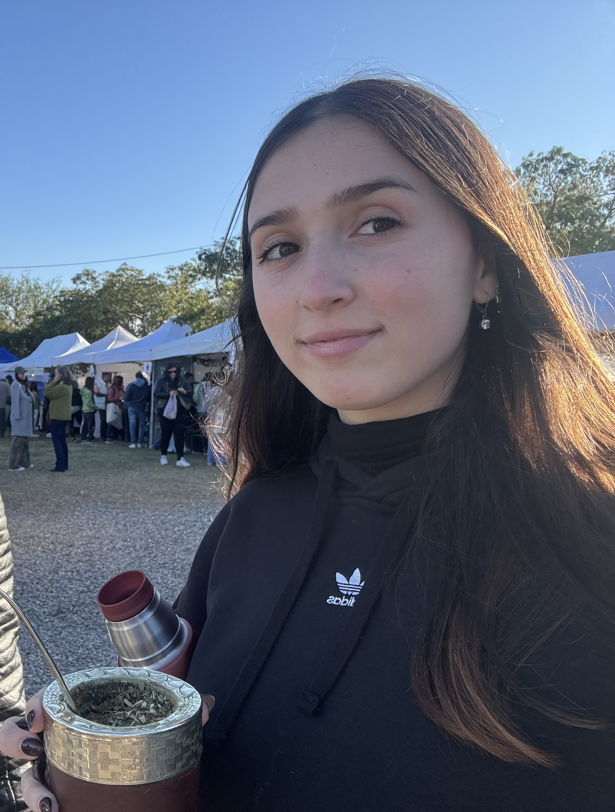

Sobre mí

¡Hola! Mi nombre es Delfina San Martín, tengo 21 años y me encuentro cursando la Licenciatura en Recursos Humanos.
Hace dos años, casi tres, que trabajo en Megatlon en el área de Administración de Personal. En este área vemos toda la parte administrativa de RRHH, como las altas en AFIP, gestión de prepagas, relaciones laborales (sindicatos), entre muchas otras cosas más.
Me gustan mucho los idiomas. Aunque actualmente solo sé inglés y francés, me gustaría aprender italiano, ruso y alemán.
En mi tiempo libre me gusta hacer planes tranquilos, como juntarme en una casa a comer o ver una película. Mis dos géneros favoritos de películas para ver son comedias románticas y terror.